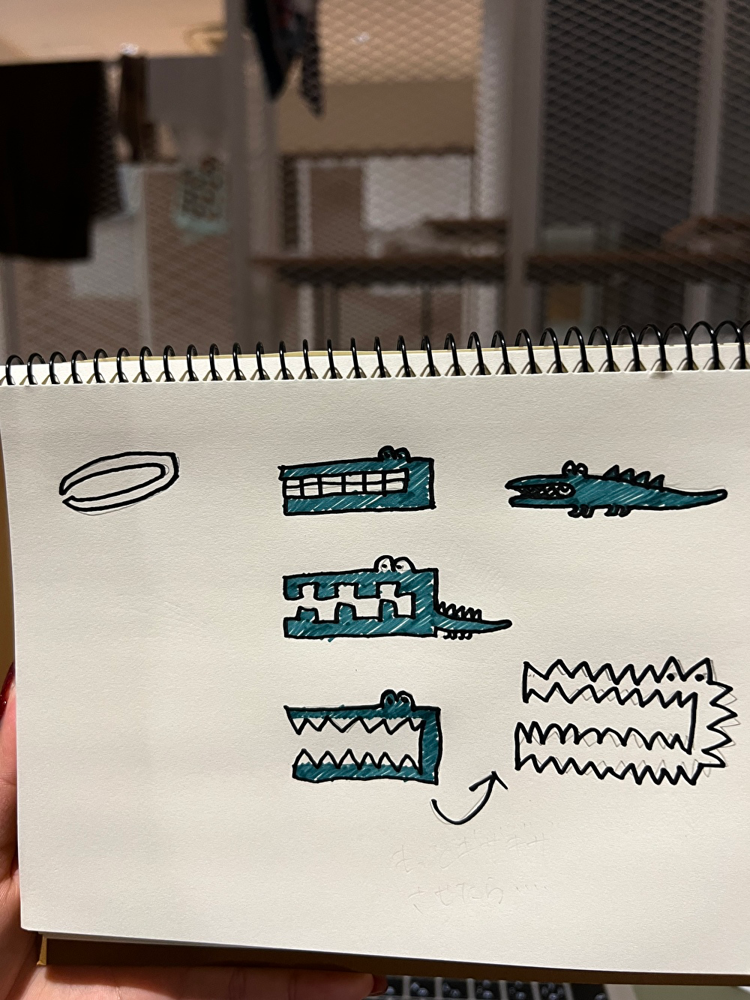
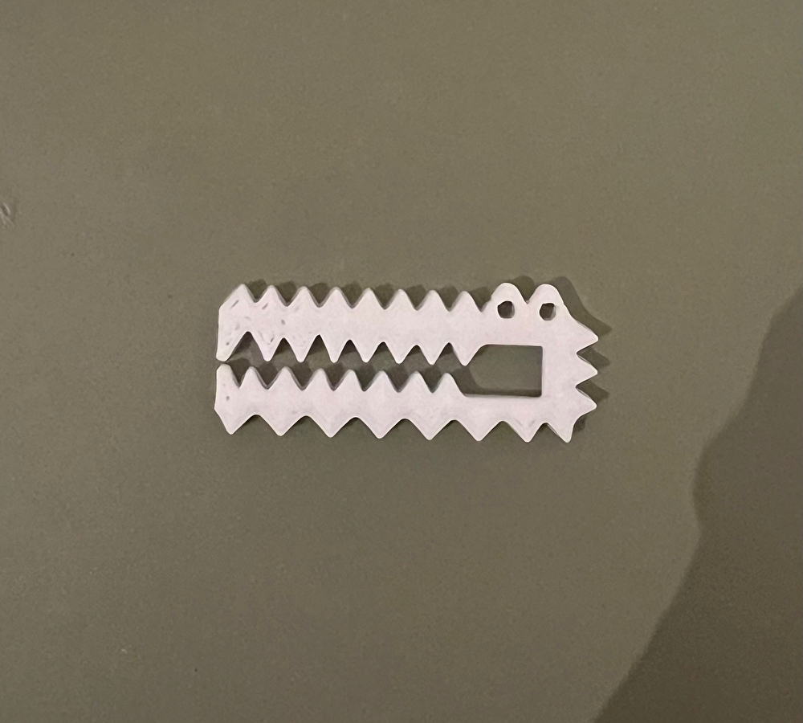

噛まれたらめっちゃ痛そうなワニ
スケッチ

完成品

設計ファイル
ここをクリック
作品紹介
人は可愛いものに目を引くと思い、ピンセットと動物を掛け合わせた。
ピンセットの形状からワニの口が連想し今回の作品が出来上がった。
初期は口の中だけをギザギザさせていたが、上側もギザギザさせたら面白いのではないかと言われ、上側も同様にギザギザさせた。
改善点
つまむところが狭すぎて薄いもの以外ほとんど何もつまめないので、用途に合わせた設計を意識したい。
saraのXBPのページ